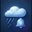

📡
⚙️
Espacio reservado para banner publicitario (AdMob / AdSense)
✕
Ajustes

Notificaciones de alerta de tormenta
Política de privacidad
✕
Política de privacidad
Radar de lluvia en directo
✕
Datos de precipitación casi en tiempo real · OpenWeatherMap